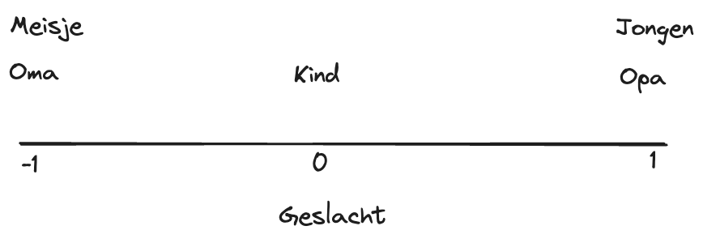
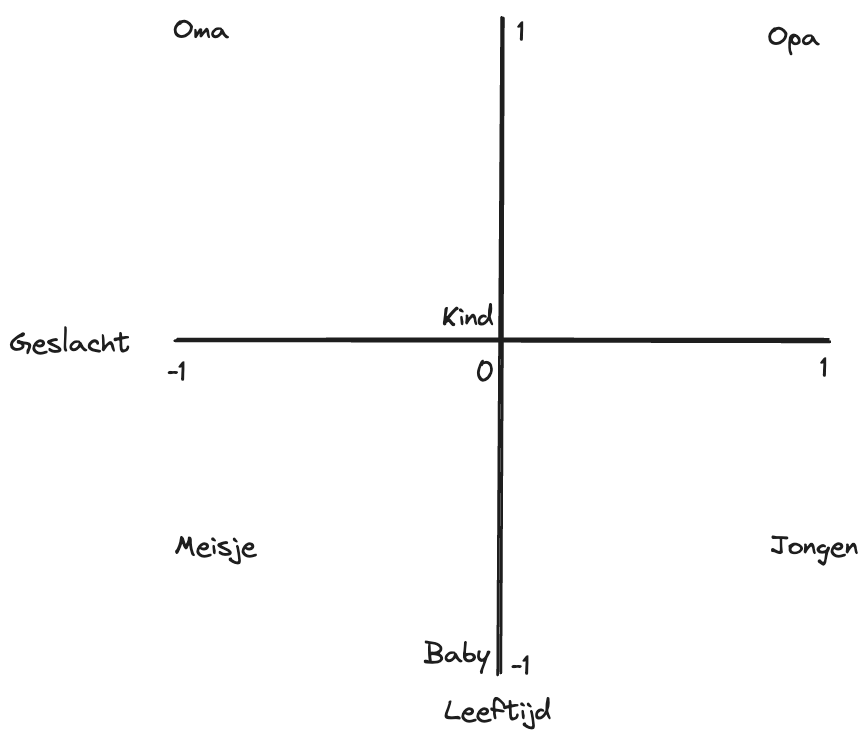

Intro
In deze blogpost ga ik uitleggen hoe je een command line interface (CLI) kunt maken met Rust. Rust heeft de laatste tijd mijn interesse gewekt en ik wil deze kennis uitbreiden door praktische projecten aan te pakken. Een van deze projecten is het ontwikkelen van een tool die een kennisbank van een GitHub-repository kan genereren voor gebruik in een Custom GPT. Hoewel OpenAI geen uitleg geeft over hoe de Custom GPT kennisbank werkt, vermoed ik dat het een mechanisme bevat vergelijkbaar met Retriever-Augmented Generation (RAG), wat ik ook zal toelichten.
Een CLI in Rust
Zoals ik in een vorige post al benadrukte, biedt Rust talrijke voordelen voor het ontwikkelen van software en dit geldt ook voor het maken van een CLI. Een specifiek voordeel voor het bouwen van CLI’s in Rust zijn de fantastische ‘crates’ die beschikbaar zijn voor het bouwen van een CLI. Voor dit project wordt gebruikgemaakt van de Clap-crate.
Clap biedt twee stijlen om je CLI te definiëren: via de derive en builder. In de documentatie van Clap wordt aangeraden om derive te gebruiken vanwege de eenvoudige lees- en schrijfbaarheid. In deze post zullen we ook derive gebruiken, maar builder kan interessant zijn als je meer flexibiliteit nodig hebt.
Het bouwen van een Github Repository Scraper in Rust
Het eerste wat je maakt voor de CLI is een struct met Parser in de derive, waarin je de CLI-argumenten definieert die je aan je CLI kunnen worden meegegeven. Een voorbeeld is het argument github_url om aan te geven welke GitHub-repository je wilt scrapen. Clap biedt veel configuratie mogelijkheden, zoals:
- Optionele argumenten
- Korte argumenten
- Enum-waarden met standaardwaardes
De huidige configuratie van de Repo Harvest CLI bevat een voorbeeld van een aantal van die mogelijkheden (zie hieronder).
#[derive(Parser, Debug)]
struct Cli {
/// The Github URL of the repository you want to fetch
github_url: String,
/// Exclude pattern
#[clap(short = 'e', long)]
exclude: Option<String>,
/// Include pattern
#[clap(short = 'p', long)]
include: Option<String>,
/// Output format
/// Can be one of, json, markdown
#[clap(
short = 'f',
long,
value_enum,
rename_all = "kebab-case",
default_value = "json"
)]
format: OutputFormat,
/// Include hidden files
/// By default, hidden files are not included
/// If you want to include hidden files, set this flag to true
#[clap(short = 'i', long, default_value = "false")]
hidden: Option<bool>,
/// The output file
#[clap(short, long, default_value = "output")]
output_file: String,
}Na het definiëren van de argument in de struct, is het implementeren van de main() functie. Hierin kan je door de gebruiker ingevulde argumenten gebruiken om de code-flow van de CLI te sturen.
Je kunt de argumenten op de volgende manier gebruiken:
fn main() {
let cli = Cli::parse();
println!("{:?}", &args.github_url);
match cli.github_url {
Some(url) => {
println!("Scraping repository at: {}", url);
},
None => println!("No GitHub URL provided."),
}
}En wat je dan verder in de main() functie doet mag je zelf bepalen ;). Maar voor een voorbeeld kan je hier kijken hoe ik de scraper geïmplementeerd heb.
Introductie tot Custom GPT’s
Sinds november 2023 heb je de mogelijkheid om Custom GPT’s te maken (met ChatGPT Plus). Hierin kan je instructies, extra kennis en acties geven. Een voordeel hiervan is dat je niet steeds je prompt hoeft te herhalen. Bijvoorbeeld: ik vraag ChatGPT vaak Rust gerelateerde vragen en dan begin ik met een prompt zoals deze: “Hey ChatGPT, jij bent een senior Rust programmeur en ik een junior. Wanneer ik je code stuur, geef jij de verbeterde code terug met aanwijzingen waarom het beter is.” Met een Custom GTP kan je deze prompt eenmalig invoeren en vervolgens direct beginnen met het indienen van mijn code, wat tijd bespaart en de interactie efficiënter maakt.
Daarnaast kan je extra kennis toevoegen en daar wil ik de repo harvester voor gebruiken. Het idee is dat de algemene Rust skills van ChatGPT best aardig zijn, maar soms wil je specifieke vragen stellen over een bepaalde crate. Met de repo harvester kan je de code van een crate ophalen en dat toevoegen aan je Custom GPT. Hierdoor kan je specifieke vragen stellen over de repository. Je kunt de Custom GPT dan gebruiken om te analyseren hoe je huidige code zich verhoudt tot die in de crate en om suggesties te vragen hoe je je code kan verbeteren om meer te lijken op de best practices die in de crate worden gebruikt.
Hoe gebruikt ChatGPT de extra kennis?
De specifieke details over hoe ChatGPT de extra kennis gebruikt is niet beschikbaar, maar je kunt wel een gok doen. Er is een methode die vaak voor dit doeleinde wordt gebruikt, namelijk Retrieval-Augmented Generation (RAG). In het kort, RAG gebruikt jouw vraag om relevante documenten uit de kennisbank te zoeken. Vervolgens voegt hij jouw vraag en de stukken uit de kennisbank samen en dat geheel wordt opgestuurd naar ChatGPT (of een andere Large Language Model (LLM)). Met deze techniek kan je dus specifieke kennis mee geven aan ChatGPT. Maar hoe worden de relevante documenten precies geselecteerd?
Er zijn verschillende technieken om RAG toe te passen maar vandaag ligt de focus op Naive Retrieval. Naive retrieval werkt door al de documenten om te zetten naar een numerieke representatie en dat op te slaan in een vector. In deze representatie zit gecomprimeerde informatie over de gehele inhoud van het document, wat haast als magie lijkt. Om dit verder toe te lichten is het makkelijker om bij losse woorden te blijven.
Embedding intermezzo
Woorden dragen betekenis, en deze betekenissen kunnen ook numeriek uitgedrukt worden. Bijvoorbeeld, je gebruikt de dimensie Geslacht (de X-as) en je stelt dat mannelijk 1 is en vrouwelijk -1 is. Dan krijg opa de waarde 1, oma de waarde -1 en kleinkind de waarde 0, want dat is een neutraal woord (zie figuur hieronder voor het visuele voorbeeld).

Maar hier ontstaat een probleem: hoe kan je nu onderscheiden tussen een meisje en oma of een jongen en opa? Om deze nuances te kunnen vangen, kan je een extra dimensie toevoegen. Door een Y-as te introduceren die ‘leeftijd’ representeert, waarbij ‘oud’ als +1 wordt gedefinieerd en ‘jong’ als -1 (zie voorbeeld hieronder).

Nu kan je de woorden onderscheiden door een numerieke representatie. Oma wordt [-1, 1] en baby [0, -1]. En zoals je je kunt voorstellen kan je meer en meer dimensies (assen) toevoegen om meer informatie op te slaan. Want als je nu puppie zou toevoegen zou die dezelfde representatie als baby hebben, terwijl het niet hetzelfde is. Dus dan zou je de ‘dier’ dimensie kunnen toevoegen. In LLM termen staan de numerieke representaties bekend als woord-embeddings.
Om het makkelijk te houden hebben we woord-embeddings gebruikt, maar je kunt dit ook voor hele documenten doen (dit heet toepasselijk, document-embedding). Een voorbeeld van een dimensie, ook wel ‘feature’ genoemd, is het Onderwerp / Genre. Maar omdat een document meer informatie bevat, kunnen de features veel complexer zijn dan bij individuele woorden.
Hier zit ook weer een stukje magie, want als maker van een LLM specificeer je de features niet. De features worden door een LLM geleerd door te trainen op grote hoeveelheden tekst, waarbij ze leren om documenten die qua inhoud hetzelfde zijn of op elkaar lijken dicht bij elkaar in de embedding space (zoals het woord-embedding voorbeeld hierboven) te plaatsen. Wanneer de LLM dit geleerd heeft, kan je de LLM gebruiken om je knowledge base te embedden in de numerieke representatie.
Een LLM bestaat uit meerdere onderdelen en de embedding laag is daar 1 van. Om dus een embedding te krijgen gebruik je alleen de embedding laag en niet het hele LLM. De functie van de LLM is namelijk het voorspellen van het volgende woord.
Naive Retrieval
Met de getrainde LLM hebben we een manier om de documenten om te zetten naar de numerieke representatie. En deze gebruik je in naive retrieval dan als volgt:
- De gebruiker typt een vraag of stuk tekst naar de LLM
- De input van de gebruiker wordt vertaald naar de numerieke representatie , of embedding, zoals eerder uitgelegd.
- Met deze numerieke waarde zoek je naar de numerieke waardes van de documenten in je kennisbank die daar het meeste op lijken (bijvoorbeeld de top 5, je hebt verschillende algoritmen om dat te berekenen, bijvoorbeeld Cosine Similarity (LINK))
- De inhoud van de top 5 documenten voeg je toe aan de input van de gebruiker aan de LLM. Dus de LLM kan die specifieke informatie dan gebruiken.
- De gebruiker krijgt een antwoord op basis van documenten.
Naast naive retrieval zijn er nog complexere en mogelijk effectievere retrieval technieken. Voor een overzicht van deze technieken, kun je de artikelen hier en hier gebruiken.
Conclusie
Van het maken van een CLI in Rust tot het begrijpen van de basisprincipes van embeddings en RAG. Nu heb je de kennis om een specifieke Custom GPT met eigen kennisbank te ontwikkelen. Waarom probeer je niet zelf een toepassing te bedenken, misschien zelfs met een simpele CLI? Je hebt nu de handvatten om te beginnen.
Success en tot de volgende keer!
Mees